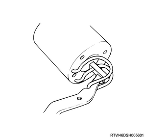
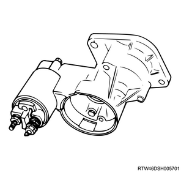
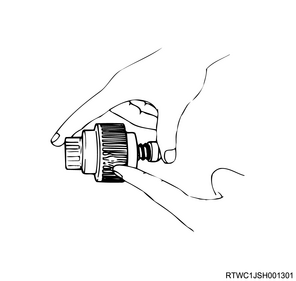
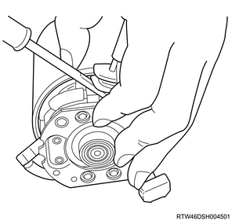
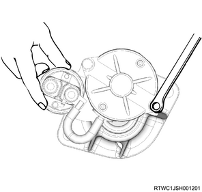
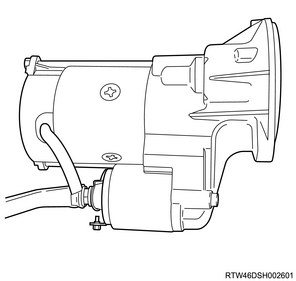
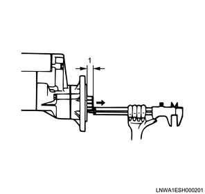
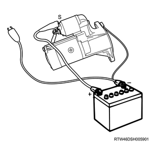
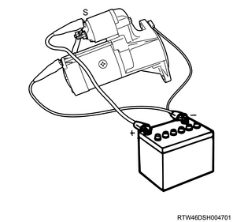

1. Install the dust cover to the magnetic switch.
2. Install the plunger to the magnetic switch.
3. Install the torsion spring to the magnetic switch.
Note

4. Install the shift lever to the magnetic switch.
Note
1. Install the magnetic switch to the gear case.
2. Install the dust cover to the gear case.
Tightening torque： 8 N・m { 0.8 kgf・m / 71 lb・in }

1. Assemble the pinion assembly.
2. Install the stopper ring to the pinion assembly.
3. Apply the grease to the gear.

4. Install the pinion assembly to the armature.
5. Install the bearing retainer to the gear case.
1. Install the armature to the yoke.
2. Install the brush to the brush holder.
Note
Caution
3. Install the brush holder to the yoke.
Note

4. Install the yoke to the gear case.
Note
1. Install the rear cover to the motor assembly.
Tightening torque： 8 N・m { 0.8 kgf・m / 72 lb・in }

2. Connect the lead wire to the magnetic switch.
Tightening torque： 9 N・m { 0.9 kgf・m / 76 lb・in }

1. Measure play using a vernier caliper.
Note
Clearance： 0.1 to 0.2 mm { 0.004 to 0.008 in }

Caution
Note
1. Inspect the magnetic switch.
Note
2. Inspect the magnetic switch.
Note

3. Inspect the magnetic switch.
Note
